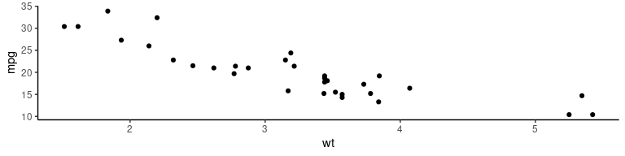
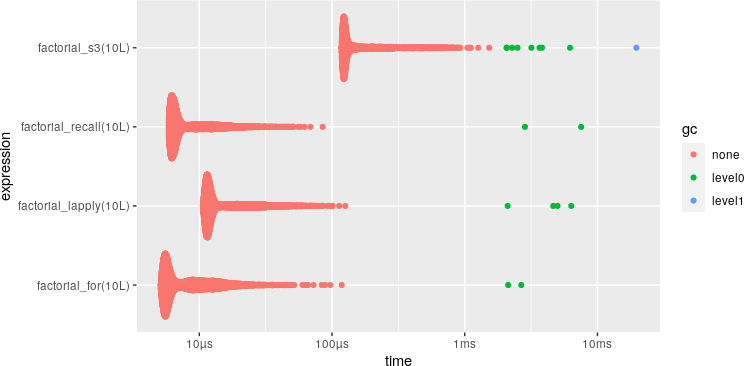
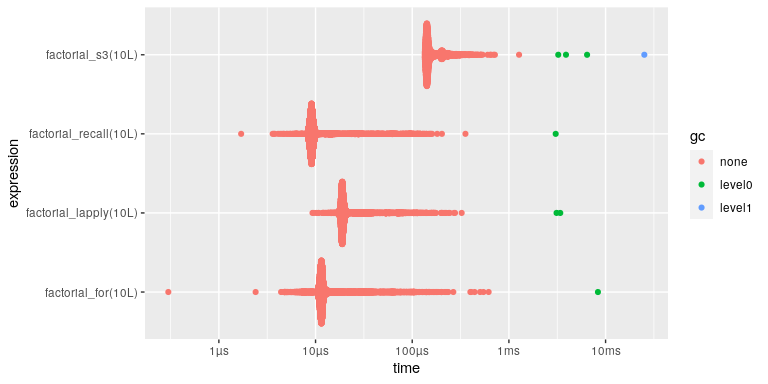

importas if Python
Tokyo.R 88
Atusy
2020-09-18
Atusy

- R Markdown関係のコミッタ
- felp、ftExtra、minidownなどパッケージを作ってはTokyoRで紹介している
- Pythonでデータ分析してる
 blog.atusy.net
blog.atusy.net @Atsushi776
@Atsushi776


提供

パッケージの干渉👎
入れ替わってる？！
パッケージ::関数👎
正直だるい

Pythonのアレが欲しい
📦importas🎉
CRAN登録は間に合いませんでした……。
スマン！！
Python風

R風

複数に同時
importas(tb = tibble, td = tidyr)
`%>%` <- magrittr::`%>%`
tb$rownames_to_column(mtcars) %>%
td$nest(data = -rowname)
#> # A tibble: 32 x 2
#> rowname data
#> <chr> <list>
#> 1 Mazda RX4 <tibble [1 × 11]>
#> 2 Mazda RX4 Wag <tibble [1 × 11]>
#> 3 Datsun 710 <tibble [1 × 11]>
#> 4 Hornet 4 Drive <tibble [1 × 11]>
#> 5 Hornet Sportabout <tibble [1 × 11]>
#> 6 Valiant <tibble [1 × 11]>
#> 7 Duster 360 <tibble [1 × 11]>
#> 8 Merc 240D <tibble [1 × 11]>
#> 9 Merc 230 <tibble [1 × 11]>
#> 10 Merc 280 <tibble [1 × 11]>
#> # … with 22 more rows入力補完に対応

完全一致のみ許可
通常の$は前方一致
ヘルプは見れない
仕組み
エイリアスの実態
importasクラスオブジェクト- 実態は名前付きリスト
- 値はすべて
NULL - エクスポートされたオブジェクトを名前に持つ
- 名前があるので入力補完が可能
- 値はすべて
str(gg)
#> List of 518
#> $ .data : NULL
#> $ .pt : NULL
#> $ .stroke : NULL
#> $ %+% : NULL
#> $ %+replace% : NULL
#> $ aes : NULL
#> $ aes_ : NULL
#> $ aes_all : NULL
#> $ aes_auto : NULL
#> $ aes_q : NULL
#> $ aes_string : NULL
#> $ after_scale : NULL
#> $ after_stat : NULL
#> $ alpha : NULL
#> $ annotate : NULL
#> $ annotation_custom : NULL
#> $ annotation_logticks : NULL
#> $ annotation_map : NULL
#> $ annotation_raster : NULL
#> $ arrow : NULL
#> $ as_labeller : NULL
#> $ autolayer : NULL
#> $ autoplot : NULL
#> $ AxisSecondary : NULL
#> $ benchplot : NULL
#> $ binned_scale : NULL
#> $ borders : NULL
#> $ calc_element : NULL
#> $ combine_vars : NULL
#> $ continuous_scale : NULL
#> $ Coord : NULL
#> $ coord_cartesian : NULL
#> $ coord_equal : NULL
#> $ coord_fixed : NULL
#> $ coord_flip : NULL
#> $ coord_map : NULL
#> $ coord_munch : NULL
#> $ coord_polar : NULL
#> $ coord_quickmap : NULL
#> $ coord_sf : NULL
#> $ coord_trans : NULL
#> $ CoordCartesian : NULL
#> $ CoordFixed : NULL
#> $ CoordFlip : NULL
#> $ CoordMap : NULL
#> $ CoordPolar : NULL
#> $ CoordQuickmap : NULL
#> $ CoordSf : NULL
#> $ CoordTrans : NULL
#> $ cut_interval : NULL
#> $ cut_number : NULL
#> $ cut_width : NULL
#> $ derive : NULL
#> $ discrete_scale : NULL
#> $ draw_key_abline : NULL
#> $ draw_key_blank : NULL
#> $ draw_key_boxplot : NULL
#> $ draw_key_crossbar : NULL
#> $ draw_key_dotplot : NULL
#> $ draw_key_label : NULL
#> $ draw_key_path : NULL
#> $ draw_key_point : NULL
#> $ draw_key_pointrange : NULL
#> $ draw_key_polygon : NULL
#> $ draw_key_rect : NULL
#> $ draw_key_smooth : NULL
#> $ draw_key_text : NULL
#> $ draw_key_timeseries : NULL
#> $ draw_key_vline : NULL
#> $ draw_key_vpath : NULL
#> $ dup_axis : NULL
#> $ el_def : NULL
#> $ element_blank : NULL
#> $ element_grob : NULL
#> $ element_line : NULL
#> $ element_rect : NULL
#> $ element_render : NULL
#> $ element_text : NULL
#> $ enexpr : NULL
#> $ enexprs : NULL
#> $ enquo : NULL
#> $ enquos : NULL
#> $ ensym : NULL
#> $ ensyms : NULL
#> $ expand_limits : NULL
#> $ expand_scale : NULL
#> $ expansion : NULL
#> $ expr : NULL
#> $ Facet : NULL
#> $ facet_grid : NULL
#> $ facet_null : NULL
#> $ facet_wrap : NULL
#> $ FacetGrid : NULL
#> $ FacetNull : NULL
#> $ FacetWrap : NULL
#> $ find_panel : NULL
#> $ flip_data : NULL
#> $ flipped_names : NULL
#> $ fortify : NULL
#> [list output truncated]
#> - attr(*, "class")= chr [1:2] "importas" "list"
#> - attr(*, "package")= symbol ggplot2$演算子の中身
::演算子と同様getExportedValue関数を使う
<-したエイリアスの居場所
.GlobalEnv
その他のエイリアスの居場所
サーチパスにattachした"importas:alias"
余談
.GlobalEnv汚染禁止
importas 0.1.0では%as%演算子やimportas関数も
.GlobalEnvにエイリアスを作っていた
が
Thanks, but modification of the .GlobalEnv is a policy violation.
attach関数を使おう
- サーチパスを追加
.GlobalEnv汚染の回避に使える- Good Practice (
?attach)- 基本的には
with関数で代用せよ - どうしても必要なら
on.exitでdetachせよ
- 基本的には
いや、.onLoadでattachして、.unLoadでdetachしたいんやけど……？
Good Practice違反禁止？
attachしたらon.exitでdetachしないと
R CMD checkに怒られる
回避するにはdo.callを経由しよう。